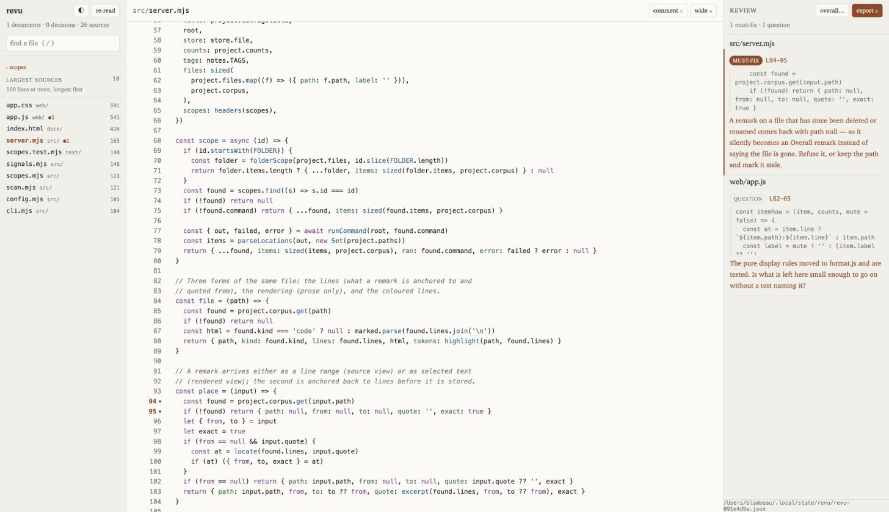

Want a code review?
We read agent-written and vibe-coded codebases for a living, and leave you with the harness as well as the report. Revu is the tool we do it with — free, open source, yours.
npm install -g @enspirit/revu
The job changed under us
A year ago, the work was writing software. Today a growing part of it is answering a harder question about software somebody else's agent already wrote: is this safe to run?
The projects arriving at our door have a shape in common. A founder with no engineering background has vibe-coded a product that demos beautifully and now holds real customer data. A team has shipped in three weeks what would have taken six months, and cannot say which parts are load-bearing. A codebase has a hundred tests, all green, none of which fail when you break the business rule on purpose. In every case we are handed a repository nobody on our side wrote, that no single person ever held in their head, delivered complete rather than in increments.
This is the new job of the professional software engineer, and it is not going away: reading code you did not write and did not watch being written, well enough to put your name on it — and putting a harness around it so that the next thousand agent-written lines cannot quietly break what matters.
Review by diff is dead
Code review as we have practised it for fifteen years rests on three assumptions: the change is small, the author is a colleague who can explain their reasoning, and both of you know the base it applies to. Pull request, line comments, approve.
All three are now false.
- The diff is the whole repository. Six hundred files in an afternoon is a normal day for an agent. A three-hundred-file pull request is not a review, it is a wall.
- The author cannot be questioned. An agent will explain anything you like, fluently, after the fact. Its explanation is generated, not remembered — so the usual review conversation, where understanding is repaired by asking, does not converge.
- You do not know the base. The thing you most need is not "what changed" but "what is here, and where should I look first".
When the unit of review stops being a change and becomes a codebase, the diff is simply the wrong lens.
"The agents will review it" is a dead end
The tempting answer is to point a second agent at the first one's output. We tried it, repeatedly. It fails for reasons that have nothing to do with how good the models get.
- A generated review is more text to read. You end up reviewing the review — and that text is optimised for sounding thorough, not for being read. The pile grows; the understanding does not.
- Accountability cannot be delegated. When a client asks whether their system can be put in front of customers, the deliverable is a signature, not a probability. Signing something nobody has read is the problem we are hired to fix; it cannot also be the method.
- The decisive judgements are not in the repository. Whether the code does the right thing for the business, whether a risk is acceptable, whether this is the system the client actually needs — none of that can be read off the source, by anybody, at any model size.
So humans will look at the code. That is settled. The open question is with what — and the honest answer, in our shop, was: with nothing built for this. We were reading agent-written repositories in an editor, keeping the map in our heads, and writing feedback in a chat window that lost it the next morning.
AI writes, humans validate — but that only holds while validating stays cheaper than writing. Every tool we build is measured against that inequality.
Agents remain excellent at the part they are actually good at: pointing. Run the linter, the type checker, the grep for a rule your project decided on. That is an instrument, not a judge — and it is exactly how Revu uses them.
So we built Revu
Revu is a reading surface for code you did not write. You point it at a repository; it opens in your browser; you read, you say things about specific lines, and it hands you back one markdown text to give to whoever writes the next change — a colleague, or the agent.
Scopes, not a file tree
A tree of six hundred files is not a question anybody has. The left panel is a list of scopes — named sets of places to look, entered one at a time, stacking as you go: what changed and was never committed, where the agent has been churning this week, the longest sources, the files no test so much as names, documents nothing links to, decisions recorded and then cited nowhere. Each one is a cheap, honest signal. None of them claims a defect; they claim a place to look.
You declare which scopes your project offers, and on what numbers, in a small
.revu.yml — because what counts as a large file is a question about your
project, not about our tool. And anything that prints a location becomes a scope of its own:
scopes:
- use: largest
min: 400 # your call, not ours
- title: Says deploy, not publish
run: git grep -n -i deploy -- '*.md'Remarks that come back as requirements
Click a line number, press c, say what should change. Each remark is anchored to
its lines, quotes them, and carries a tag — must-fix, question,
scope. The export is one markdown document, addressed to whoever writes next,
opening with the only instruction that matters: treat a remark as the requirement, not
as a suggestion to paraphrase back.
What it refuses to do
It never writes to the project under review — your remarks live outside it, so a review can span days without touching a branch. And there is no AI inside Revu. That is deliberate. The judgement is the product; the tool's job is to make reading cheap enough that the judgement actually happens.
About two thousand lines, three dependencies, no build step. It is a tool, not a platform.
Where it comes from
We build with agents every day, at scale, and we have the scar tissue. o=f(i) — a formula as a service, where a small program answers at a URL — is largely agent-written, specification first, and reviewing it is what made the gap obvious. Klaro Cards, our project-management product, is where the same practices meet a codebase with years of history and real customers behind it. Revu was built in a day, out of that frustration, and the first thing we did was point it at itself — which is how the remark in the screenshot above was written.
Enspirit
Software engineering, done with agents and signed by humans.
Klaro Cards
Project management that reads like a deck of cards, not a spreadsheet.
o=f(i)
A formula as a service. You publish a calculation; it answers at a URL.
Use it, or ask us to
Revu is open source under the MIT licence. It runs locally, binds to
127.0.0.1, and sends nothing anywhere.
$ npm install -g @enspirit/revu
$ revu ~/code/the-project-you-inherited
That is the whole installation. It opens in your browser on
127.0.0.1:7777; with no path it reads the directory you are standing in.
Want a code review?
That is our day job. We review vibe-coded products before they meet real users, put test and deployment harnesses around agent-built codebases, and hand back the harness as well as the report — not just an opinion. Tell us what you have inherited.
If Revu is useful to you and you would like the open-source work to continue, you can sponsor Enspirit on GitHub. Issues and pull requests are welcome on the repository; the thing we most want to hear about is the scope you wished existed while reading somebody else's code.